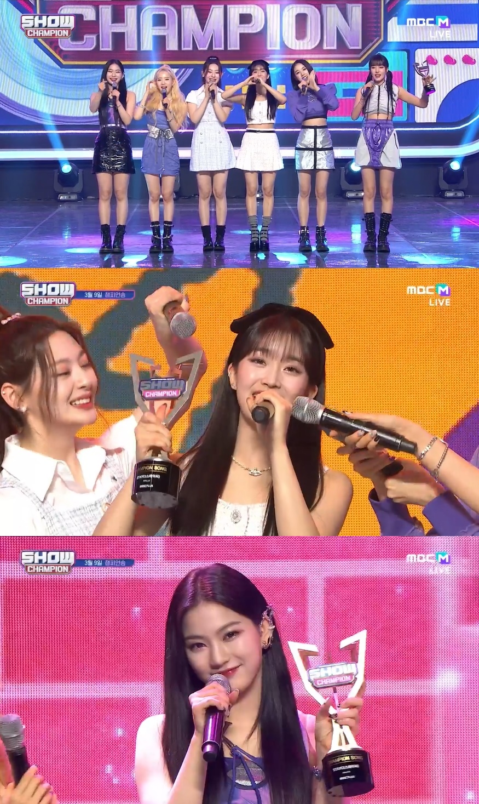

그룹 스테이씨(STAYC)가 음악 방송 4관왕에 올랐다.
스테이씨(수민, 시은, 아이사, 세은, 윤, 재이)는 9일 오후 방송된 MBC M ‘쇼! 챔피언’에 출연해 두 번째
미니앨범 ‘YOUNG-LUV.COM’ 타이틀곡 ‘RUN2U’로 1위를 차지했다.
이날 스테이씨는 헤어부터 메이크업, 코디까지 완벽한 조합으로 ‘RUN2U’ 무대를 선보였다.
강한 중독성을 지닌 포인트 안무 ‘주춤주춤’부터 총을 장전하는 동작, 가슴을 두드리는 동작 등의 퍼포먼스가 무대를 화려하게 장식했다.
또한 수민과 세은은 이날 ‘쇼! 챔피언’
스페셜 MC로 출연해 강민과 호흡을 맞췄다. 러블리한 비주얼과 스타일링으로 등장한 수민과 세은은 싱그러운 에너지로 K팝 팬들과 인사했다. 수민과 세은은 안정적인 진행과 센스 있는 상황극을
선보이며 눈도장을 찍었다.
특히 스테이씨는 이날 ‘쇼챔피언’에서 1위를 차지하며 ‘RUN2U’로 음악 방송 4관왕에 올랐다. 스테이씨는 “먼저 우리 스윗(팬클럽)에게
감사하다. 하이업 가족 분들 너무 사랑하고 감사하다”라며 “‘RUN2U’와 스테이씨 앞으로도 많이 사랑해달라”고 소감을 밝혔다.
스테이씨는 지난달 21일
‘YOUNG-LUV.COM’을 발매하고 꾸준한 상승세를 증명하고 있다. 앨범 초동 판매량 153,301장을 돌파하며 데뷔 이래 자체 최고 기록을 경신했다. 타이틀곡 ‘RUN2U’는 글로벌
음원 스트리밍 플랫폼 유튜브 뮤직이 발표한 ‘한국 인기곡 TOP 100’ 차트에 2주 연속 이름을 올렸고, 뮤직비디오는 3000만 뷰를 넘어서며 글로벌 인기를 입증했다. 한편, 스테이씨는
앞으로도 다양한 활동 및 콘텐츠를 통해 활발히 활동을 이어갈 예정이다.
NEWS
‘쇼챔피언’ 스테이씨, ‘RUN2U’ 음악방송 4관왕 “너무 사랑하고 감사해”
